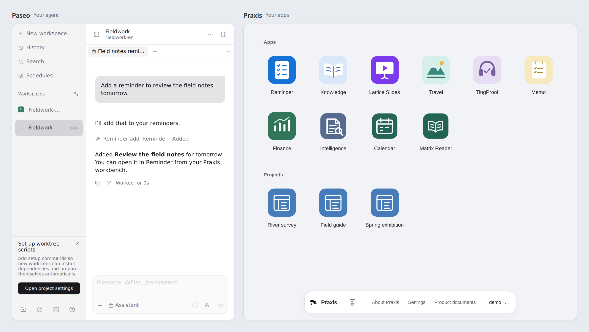

A self-hosted workbench
for your AI agent.
Ask for an outcome. Choose what your agent can access. Open your apps to review and use the result.
For yourself, your family, your team or your organization.

Ask. Authorize. Review.
Ask for an outcome
Use your preferred agent. Start with a task, not a tour of the interface.
Choose what it may access
Sign in and approve specific apps, records and actions. You can revoke access.
Use the result
Open the native app to read, watch, listen or check the evidence when you choose.
Useful apps. A place for your own.
Fourteen built-in components, each with its own records and interface. Start with what you need, then build an app around the way you work.
 ReminderReminders and tasks
ReminderReminders and tasks KnowledgeNotes, books and sources
KnowledgeNotes, books and sources Lattice SlidesPresentations
Lattice SlidesPresentations TravelTrip plans, places and photos
TravelTrip plans, places and photos TingProofAudio proofreading
TingProofAudio proofreading MemoChecklists and records
MemoChecklists and records FinanceIncome, expenses, budgets and assets
FinanceIncome, expenses, budgets and assets IntelligenceIntelligence sources, entities and changes
IntelligenceIntelligence sources, entities and changes CalendarCalendar and agenda
CalendarCalendar and agenda Matrix ReaderRead selected Matrix rooms
Matrix ReaderRead selected Matrix rooms LettersPrivate academic correspondence
LettersPrivate academic correspondence ProfilesPrivate academic dossiers
ProfilesPrivate academic dossiers ProjectsResearch, engineering and collaboration
ProjectsResearch, engineering and collaboration PolarisRuntime observations
PolarisRuntime observations
Keep the work yours.
Your agent, your choice.
Praxis connects to external agents through authorized tools. Keep the client and model you prefer; verify that your client supports the connection.
Your data, on your terms.
Run your own instance. Review or revoke app access. Reading a card does not accept work or send a colleague a read receipt.
A trace you can follow.
Inspect authorized MCP call metadata and recorded Polaris observations. Broader end-to-end workflow improvement is part of the product direction.
Try one real task.
Before setting up your own instance, paste this prompt into your agent.
Open the workbench to sign inConnect to Praxis at https://polaris.jianxiaoyitech.com/mcp using OAuth. Help me sign in and choose what you may access, then show my available apps and tools.
The online service requires a Praxis account. Self-service registration is planned.
Then ask: “Remind me tomorrow to review the field notes.”
Or make it your own.
Git, Docker Engine and Compose v2 are all you need to start the complete workbench and fourteen built-in apps.
git clone --recurse-submodules \
https://github.com/55aaseclab/praxis.git
cd praxis
docker compose up --build -d --waitGet the generated owner account:
docker compose exec core node \
scripts/builtin-install.mjs credentialsThen open http://127.0.0.1:4321/ and connect your agent to your local instance.
A few things to know.
Does Praxis replace my agent?
No. Your external agent interprets the task and calls authorized app tools. Praxis owns the app records, checks operations and presents results.
Can I use it with other people?
Yes. Praxis supports personal, family and team or organization use, with app, resource and action permissions. Membership does not automatically share private records.
Can I build and host my own app?
Yes. Use the app standard to register an independent app. Managed deployment also needs its reviewed integration and explicit installation configuration.
Can I see what my agent did?
Settings includes Trace for actual MCP calls and supplemental runtime observations. Full-business-process analysis and workflow improvement remain product goals.